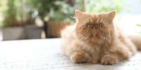
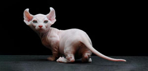
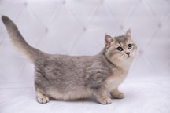
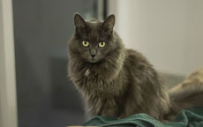

Información sobre los Gatitos del local
Si querés saber las comodidades y personalidades de los Gatitos, acá te lo dejamos.
Matcha
- Es un gato de raza persa
- Su carácter es tranquilo, cariñoso y amigable
- Disfruta de la compañia y más con personas en las que entró en confianza
- Le gusta los mimos y ser acariciado
- Tiene ciertos problemas respiratorios por lo que prefiere los espacios amplios
- Si te gustaría darle frutas o comida, sus favoritas son: papaya, mango, banana, piña y granada

Capuccino
- Es un gato de raza elfo
- Tiene una gran energía, es muy inteligente, travieso y curioso
- No duda en solicitar cualquier cosa en cada momento y siempre está dispuesto a jugar
- Le encanta estar con la gente y que le presten atención.
- Es un gato muy comunicativo y suele dar la bienvenida
- Es muy ronroneador

Submarino
- Es un gato de raza munchkin
- Es juguetón y amigable
- Es bastante ágil y rápido
- Le encanta tomar prestado juguetes u objetos que puedan llamar su atención y esconderlos
- Es asustadizo, y especialmente sensible a los ruidos fuertes
- Sus frutas favoritas son: sandía, melón y manzana

Té con leche
- Es un gato de raza nebelung
- Es un poco reservado con los desconocidos
- Prefiere estar en espacios cerrados
- Le gustan los ambientes silenciosos
- No es muy paciente
- Sus frutas preferidas son: pera, melocotón y frutilla
